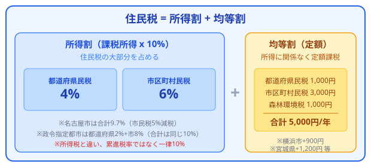
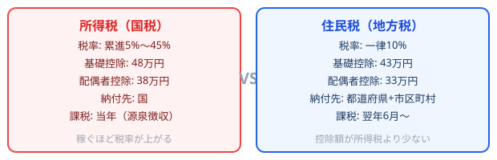

毎月の給与明細で引かれている「住民税」。所得税と比べて仕組みがわかりにくく、「なぜこの金額なの？」と疑問に思ったことはありませんか？この記事では、住民税がどのように決まるのかを一から解説し、合法的に税負担を減らすためのポイントもお伝えします。
住民税とは
住民税は、都道府県や市区町村に納める地方税です。正式には「都道府県民税」と「市区町村民税」の2つを合わせて住民税と呼びます。
住民税の大きな特徴は、前年の所得に基づいて計算されるという点です。たとえば、2026年度（2026年6月〜2027年5月）に支払う住民税は、2025年1月〜12月の所得をもとに計算されます。
このため、新卒1年目は住民税がかかりませんが、2年目の6月から前年の所得に応じた住民税が引かれ始めます。「2年目で手取りが減った」と感じる原因の多くは、この住民税の天引き開始によるものです。
また、退職した翌年にも住民税が課税される点にも注意が必要です。収入がなくなっても前年の所得に基づいて課税されるため、退職前に住民税の支払い資金を確保しておくことが大切です。
住民税が課税されるタイミング
所得割と均等割
住民税は「所得割」と「均等割」の2つの要素で構成されています。
所得割
所得に応じて課税される部分で、住民税の大部分を占めます。税率は全国一律で10%（都道府県民税4%＋市区町村民税6%）です。所得税と異なり、累進税率ではなく一律税率である点が大きな違いです。
所得割額 = 課税所得金額 × 10% - 税額控除均等割
所得に関係なく定額で課税される部分です。2026年度の標準税額は年額5,000円（都道府県民税1,000円＋市区町村民税3,000円＋森林環境税1,000円）です。
ただし、一定以下の所得の場合は均等割も非課税となります。非課税の基準は市区町村によって異なりますが、おおむね給与収入が100万円以下であれば住民税が完全に非課税となるケースが多いです。
住民税の構成（図解）

所得税と住民税の違い（図解）

計算方法のステップ解説
住民税の計算は以下の5ステップで行います。会社員の方を例に、順番に見ていきましょう。
ステップ1: 収入金額を確認する
源泉徴収票の「支払金額」欄に記載された年間の給与収入を確認します。これが計算のスタート地点です。
ステップ2: 給与所得控除を引く
給与収入から「給与所得控除」を差し引いて、給与所得を算出します。
給与所得 = 給与収入 - 給与所得控除ステップ3: 所得控除を引く
給与所得から各種「所得控除」（基礎控除、社会保険料控除、配偶者控除など）を差し引いて、課税所得金額を算出します。
課税所得金額 = 給与所得 - 所得控除の合計ステップ4: 所得割額を計算する
課税所得金額に税率10%をかけて、さらに税額控除（調整控除など）を差し引きます。
所得割額 = 課税所得金額 × 10% - 税額控除ステップ5: 均等割を足す
所得割額に均等割（5,000円）を加算して、住民税の年額が確定します。
住民税の年額 = 所得割額 + 均等割（5,000円）具体例: 年収500万円、独身、社会保険料70万円の場合を計算してみましょう。
1. 給与収入: 5,000,000円
2. 給与所得控除: 1,440,000円
→ 給与所得 = 5,000,000 - 1,440,000 = 3,560,000円
3. 所得控除:
- 基礎控除: 430,000円
- 社会保険料控除: 700,000円
→ 課税所得 = 3,560,000 - 1,130,000 = 2,430,000円
4. 所得割 = 2,430,000 × 10% = 243,000円
※ 調整控除は考慮せず簡略化
5. 住民税 = 243,000 + 5,000 = 248,000円（月額 約20,700円）給与所得控除
給与所得控除は、会社員の「経費」に相当するものです。自営業者が売上から経費を差し引くように、会社員は給与収入から給与所得控除を差し引くことができます。控除額は給与収入に応じて以下のように決まります。
| 給与収入 | 給与所得控除額 |
|---|---|
| 162.5万円以下 | 55万円 |
| 162.5万円超〜180万円以下 | 収入 × 40% - 10万円 |
| 180万円超〜360万円以下 | 収入 × 30% + 8万円 |
| 360万円超〜660万円以下 | 収入 × 20% + 44万円 |
| 660万円超〜850万円以下 | 収入 × 10% + 110万円 |
| 850万円超 | 195万円（上限） |
給与収入が高いほど控除額も大きくなりますが、850万円を超えると上限の195万円で頭打ちになります。つまり、年収850万円以上の方は、収入が増えても控除額は変わりません。
主要な所得控除一覧
住民税の計算で使える所得控除は多数あります。所得税の控除額と異なる点に注意してください（住民税のほうが控除額が少ない項目が多い）。
| 控除の種類 | 住民税の控除額 | 主な条件 |
|---|---|---|
| 基礎控除 | 43万円 | 合計所得2,500万円以下の全員 |
| 配偶者控除 | 33万円 | 配偶者の合計所得48万円以下 |
| 配偶者特別控除 | 最大33万円 | 配偶者の合計所得48万超〜133万円以下 |
| 扶養控除（一般） | 33万円 | 16歳以上の扶養親族 |
| 扶養控除（特定） | 45万円 | 19歳以上23歳未満の扶養親族 |
| 社会保険料控除 | 支払額全額 | 健康保険・年金保険料など |
| 生命保険料控除 | 最大7万円 | 生命保険・介護医療・個人年金 |
| 地震保険料控除 | 最大2.5万円 | 地震保険料の支払い |
| 医療費控除 | 最大200万円 | 医療費の自己負担が10万円超 |
| 小規模企業共済等掛金控除 | 支払額全額 | iDeCo・小規模企業共済の掛金 |
特に見落としがちなのが、所得税と住民税の基礎控除の違いです。所得税の基礎控除は48万円ですが、住民税の基礎控除は43万円と5万円少なくなっています。このため、住民税のほうが課税所得が大きくなり、「住民税って意外と高い」と感じる原因の一つになっています。
住民税が高い・安いケース
住民税の金額は個人の状況によって大きく変わります。「高くなるケース」と「安くなるケース」をそれぞれ見てみましょう。
住民税が高くなるケース
- 独身で年収が高い - 扶養控除や配偶者控除が使えないため、課税所得が大きくなります
- 副業収入がある - 本業の給与に加えて副業収入も合算されるため、住民税が増えます
- 所得控除をあまり使っていない - iDeCoや医療費控除などを活用していない場合
- 前年に賞与が多かった - 賞与も住民税の計算に含まれます
住民税が安くなるケース
- 扶養家族が多い - 扶養控除が増えるため課税所得が減ります
- ふるさと納税をしている - 寄付金控除として住民税から差し引かれます
- 住宅ローン控除がある - 所得税で引ききれない分が住民税から控除されます（上限あり）
- iDeCoに加入している - 掛金全額が所得控除になります
- 医療費が多い年 - 10万円を超えた分が医療費控除として使えます
ふるさと納税で住民税を減らす
ふるさと納税は、住民税を減らす最も手軽で効果的な方法の一つです。実質2,000円の自己負担で返礼品がもらえるうえ、寄付額のほぼ全額が住民税と所得税から控除されます。
ふるさと納税の控除の仕組み
ふるさと納税で控除される住民税は、主に以下の3つに分かれます。
- 所得税の控除:（寄付額 - 2,000円）× 所得税率
- 住民税の基本控除:（寄付額 - 2,000円）× 10%
- 住民税の特例控除:（寄付額 - 2,000円）×（100% - 10% - 所得税率）
この3つを合計すると、自己負担2,000円を除いた寄付額のほぼ全額が控除される仕組みです。ただし、控除には上限があり、年収や家族構成によって限度額が異なります。
控除限度額の目安
| 年収 | 独身 | 夫婦（配偶者控除あり） | 夫婦＋子1人（16歳以上） |
|---|---|---|---|
| 300万円 | 約28,000円 | 約19,000円 | 約11,000円 |
| 400万円 | 約42,000円 | 約33,000円 | 約25,000円 |
| 500万円 | 約61,000円 | 約49,000円 | 約40,000円 |
| 600万円 | 約77,000円 | 約69,000円 | 約57,000円 |
| 700万円 | 約108,000円 | 約86,000円 | 約78,000円 |
| 800万円 | 約129,000円 | 約120,000円 | 約110,000円 |
限度額を超えてしまうと、超えた分は単なる寄付となり控除されません。自分の限度額を正確に把握してから寄付することが重要です。
ワンストップ特例制度
確定申告をしない会社員の方は「ワンストップ特例制度」を使えば、確定申告なしでふるさと納税の控除を受けられます。この場合、所得税からの控除分も住民税から差し引かれるため、住民税の減額幅がさらに大きくなります。ただし、寄付先が5自治体以内という制限があります。
特別徴収と普通徴収
住民税の納付方法には「特別徴収」と「普通徴収」の2種類があります。
特別徴収（給与天引き）
会社員の場合、住民税は原則として特別徴収（給与からの天引き）で納付されます。毎年6月から翌年5月までの12回に分けて、毎月の給与から差し引かれます。
6月の住民税が他の月より高い場合がありますが、これは年税額を12で割った際の端数が6月分に加算されるためです。計算間違いではないので安心してください。
普通徴収（自分で納付）
自営業者やフリーランス、退職した方は普通徴収で自分で納付します。年4回（6月・8月・10月・翌1月）に分けて、市区町村から届く納税通知書で支払います。
一括払いも選択可能で、一部の市区町村では口座振替やクレジットカード払い、スマホ決済にも対応しています。
副業の住民税
副業をしている会社員にとって気になるのが、「副業が会社にバレるのでは？」という点です。住民税は本業と副業の所得を合算して計算されるため、特別徴収の場合は会社に届く住民税額が本業のみの計算より高くなり、副業の存在が推測される可能性があります。
これを防ぐには、確定申告の際に「住民税の徴収方法」で「自分で納付（普通徴収）」を選択する方法があります。ただし、すべての自治体が副業分のみの普通徴収に対応しているわけではないため、事前に確認が必要です。
あなたの住民税がいくらになるか、すぐに計算できます
住民税・所得税計算ツールを使ってみるまとめ
住民税は前年の所得に基づいて計算される地方税で、所得割（10%）と均等割（5,000円）で構成されています。重要なポイントを整理すると以下のとおりです。
- 住民税は前年の所得をもとに、翌年6月〜翌々年5月に課税される
- 税率は全国一律10%（所得割）＋均等割5,000円
- 所得税とは控除額が異なる（住民税のほうが控除額が小さい）
- ふるさと納税、iDeCo、医療費控除などで合法的に節税できる
- 会社員は特別徴収（給与天引き）、自営業者は普通徴収で納付
住民税の仕組みを理解すれば、活用できる控除を見逃すことなく、適切に節税できます。当サイトの計算ツールを使えば、年収や控除額を入力するだけで住民税の概算額をすぐに確認できますので、ぜひ活用してみてください。